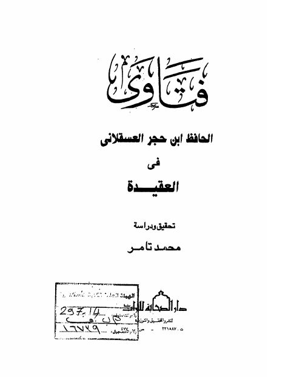

Downloads need an internet connection.
فتاوى الحافظ ابن حجر العسقلاني في العقيدة
Authors: أحمد بن علي بن حجر العسقلاني
Editors: محمد تامر
Publishers: دار الصحابة للتراث
**▫️ العنوان: فتاوى الحافظ ابن حجر العسقلاني في العقيدة** ▪️ المؤلف: #ابن_حجر_العسقلاني ▫️ المحقق: #محمد_تامر ▪️ الناشر: #دار_الصحابة_للتراث ▫️ تاريخ النشر: 1410، 1989 ▪️ بلد النشر: طنطا، #مصر ▫️ الطبعة: 1 ▪️ عدد الأجزاء: 1 ▫️ الصفحات: 126 ▪️ نوع الوعاء: #كتاب ▫️ التصنيف الرئيسي: #العقيدة_والمذاهب_والأديان ▪️ التصنيف الفرعي: #الفتوي ۪